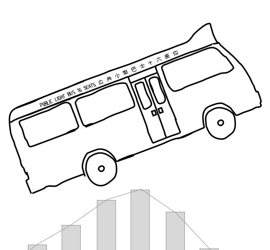
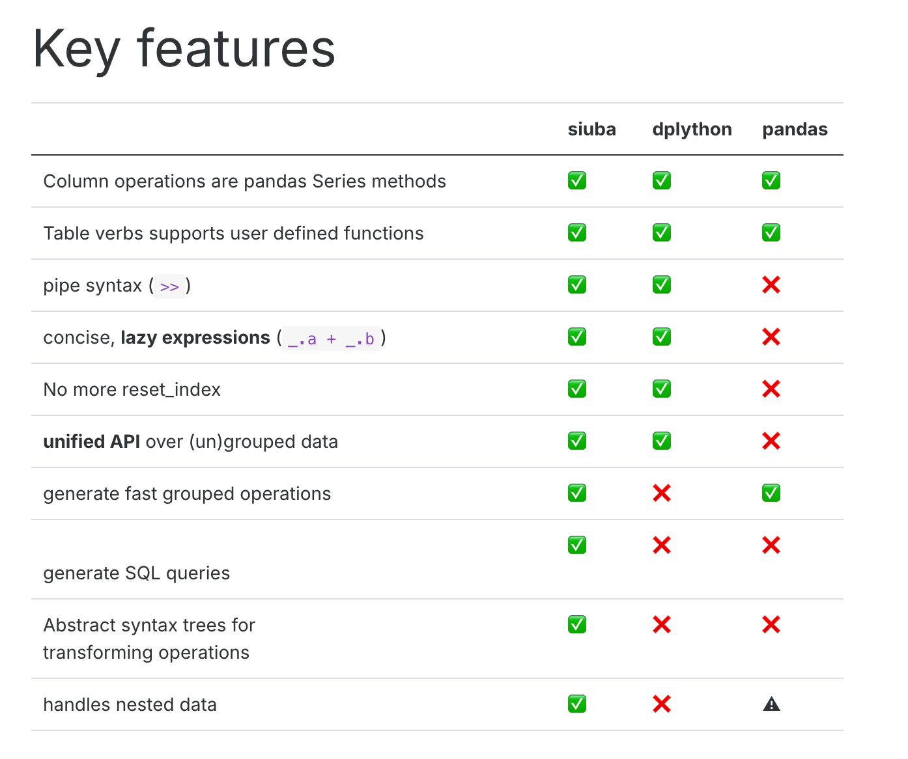

Code
Sys.setenv(RETICULATE_PYTHON = "/Library/Frameworks/Python.framework/Versions/3.11/bin/python3.11")
library(reticulate)
use_python("/Library/Frameworks/Python.framework/Versions/3.11/bin/python3.11")Tony Duan

siuba (小巴) is a port of dplyr and other R libraries with seamless support for pandas and SQL
Using python 3.11# Import pandas for data manipulation
import pandas as pd
# Import numpy for numerical operations
import numpy as np
# Import matplotlib.pylab for plotting
import matplotlib.pylab as plt
# Import seaborn for statistical data visualization
import seaborn as sns
# Import specific functions and objects from siuba
from siuba.siu import call
from siuba import _, mutate, filter, group_by, summarize,show_query
from siuba import *
# Import sample datasets from siuba
from siuba.data import mtcars,penguins# using pandas
# Select the 'mpg' column from small_mtcars
data1=small_mtcars>>select(_.mpg)
# Select the 'cyl' column from small_mtcars
data2=small_mtcars>>select(_.cyl)
# Concatenate data1 and data2 DataFrames by column
data3=pd.concat([data1, data2],axis=1)
# Display the concatenated DataFrame
data3Missing values (NaN) can be handled by either removing rows/columns with missing data or by filling them with appropriate values.
# Create a sample DataFrame with missing values
df_missing = pd.DataFrame({
'A': [1, 2, np.nan, 4],
'B': [5, np.nan, np.nan, 8],
'C': [9, 10, 11, 12]
})
print("Original DataFrame:")
print(df_missing)
# Drop rows that contain any NaN values
df_dropped_all = df_missing.dropna()
print("\nDataFrame after dropping rows with any NA:")
print(df_dropped_all)Missing values can be filled with a specific value, the mean, median, or previous/next valid observation.
keep data in left which not in right
keep data in right which not in left
Below 3 method will give same result
other way:
other way:
siuba provides convenient methods for string manipulation, often mirroring pandas string methods, allowing for efficient operations on text data within DataFrames.
Use .str.replace(…, regex=True) with regular expressions to replace patterns in strings.
For example, the code below uses “p.”, where . is called a wildcard–which matches any character.
Use str.extract() with a regular expression to pull out a matching piece of text.
For example the regular expression “^(.*) ” contains the following pieces:
a matches the literal letter “a”
.* has a . which matches anything, and * which modifies it to apply 0 or more times.
siuba leverages pandas’ datetime capabilities, allowing for flexible parsing, manipulation, and formatting of date and time data.
You can extract various components like year, month, day, hour, minute, second from datetime objects.
Dates can be formatted into different string representations using strftime().
# Import datetime module
from datetime import datetime
# Add new columns for month name, formatted raw date, and year from raw date
df_date=df_dates>>mutate(month=_.dates.dt.month_name()
,date_format_raw = call(pd.to_datetime, _.raw)
,date_format_raw_year=_.date_format_raw.dt.year
)
# Display the DataFrame
df_date# Import create_engine from sqlalchemy for database connection
from sqlalchemy import create_engine
# Import LazyTbl for lazy SQL operations
from siuba.sql import LazyTbl
# Import necessary siuba functions
from siuba import _, group_by, summarize, show_query, collect
# Import mtcars dataset
from siuba.data import mtcars
# Create an in-memory SQLite database engine
engine = create_engine("sqlite:///:memory:")
# Copy the mtcars DataFrame to a SQL table named 'mtcars', replacing it if it already exists
mtcars.to_sql("mtcars", engine, if_exists = "replace")because lazy expressions,the collect function is actually running the sql.
https://siuba.org/
---
title: "Data manipulation with siuba"
author: "Tony Duan"
execute:
warning: false
error: false
eval: false
format:
html:
toc: true
toc-location: right
code-fold: show
code-tools: true
number-sections: true
code-block-bg: true
code-block-border-left: "#31BAE9"
---
{width="434"}
siuba (小巴) is a port of dplyr and other R libraries with seamless support for pandas and SQL
## Comparison with different python dataframe package
{width="656"}
Using python 3.11
```{r}
Sys.setenv(RETICULATE_PYTHON = "/Library/Frameworks/Python.framework/Versions/3.11/bin/python3.11")
library(reticulate)
use_python("/Library/Frameworks/Python.framework/Versions/3.11/bin/python3.11")
```
## load package
```{python}
# Import pandas for data manipulation
import pandas as pd
# Import numpy for numerical operations
import numpy as np
# Import matplotlib.pylab for plotting
import matplotlib.pylab as plt
# Import seaborn for statistical data visualization
import seaborn as sns
# Import specific functions and objects from siuba
from siuba.siu import call
from siuba import _, mutate, filter, group_by, summarize,show_query
from siuba import *
# Import sample datasets from siuba
from siuba.data import mtcars,penguins
```
```{python}
# Select 'cyl', 'mpg', and 'hp' columns from mtcars and then take the first 5 rows
small_mtcars = mtcars >> select(_.cyl, _.mpg, _.hp)>> head(5)
```
## select column
### get column names
```{python}
# Get a list of column names from the small_mtcars DataFrame
list(small_mtcars)
```
### select columns by name
```{python}
# Select 'cyl' and 'mpg' columns from the small_mtcars DataFrame
small_mtcars >> select(_.cyl, _.mpg)
```
### select columns by name match with 'p'
```{python}
# Select columns whose names contain the letter 'p'
small_mtcars >> select(_.contains("p"))
```
### select columns by index
#### select first and 3rd columns
```{python}
# Select the columns at index 0 (first) and 2 (third)
small_mtcars >> select(0,2)
```
#### select first to 3rd columns
```{python}
# Select columns from index 0 up to (but not including) index 3
small_mtcars >> select(_[0:3])
```
## drop column
```{python}
# Drop the 'cyl' column from the small_mtcars DataFrame
small_mtcars >> select(~_.cyl)
```
## Renaming column
```{python}
# Rename the 'mpg' column to 'new_name_mpg'
small_mtcars >> rename(new_name_mpg = _.mpg)
```
## Create column
### Mutate
```{python}
# Create new columns based on existing ones
mtcars.head()>> mutate(gear2 = _.gear+1
,gear3=if_else(_.gear > 3, "long", "short")
,qsec2=case_when({
_.qsec <= 17: "short",
_.qsec <= 18: "Medium",
True: "long"
})
)
```
### Transmute,create column and only keep this column
```{python}
# Create a new column 'gear2' and keep only this column
mtcars.head()>> transmute(gear2 = _.gear+1)
```
## Filter rows
```{python}
# Filter rows where 'gear' is equal to 4
mtcars>> filter(_.gear ==4)
```
### Filters with AND conditions
```{python}
# Filter rows where 'cyl' is greater than 4 AND 'gear' is equal to 5
mtcars >> filter((_.cyl >4) & (_.gear == 5))
```
### Filters with OR conditions
```{python}
# Filter rows where 'cyl' is equal to 6 OR 'gear' is equal to 5
mtcars >> filter((_.cyl == 6) | (_.gear == 5))
```
### filter row with index
#### first 3
```{python}
# Select the first 3 rows of the small_mtcars DataFrame
small_mtcars>>head(3)
```
#### last 3
```{python}
# not in siuba, in pandas
# Select the last 3 rows of the small_mtcars DataFrame using pandas
small_mtcars.tail(3)
```
#### 5th rows
```{python}
# not in siuba, in pandas
# Select the row at index 4 (which is the 5th row) using pandas
mtcars.iloc[[4]]
```
#### 1 and 5th rows
```{python}
# not in siuba, in pandas
# Select rows at index 0 (1st row) and 4 (5th row) using pandas
mtcars.iloc[[0,4]]
```
#### 1 to 5th rows
```{python}
# not in siuba, in pandas
# Select rows from index 0 up to (but not including) index 4 using pandas
mtcars.iloc[0:4]
```
#### get ramdon 5 rows
```{python}
# Select 5 random rows from the mtcars DataFrame using pandas, with a fixed random_state for reproducibility
mtcars.sample(5, random_state=42)
```
## Append
### append by row
```{python}
# not available in siuba yet
#from siuba import bind_rows
```
```{python}
# using pandas
# get 1 to 4 rows
data1=mtcars.iloc[0:4]
# get 9 rows
data2=mtcars.iloc[10:11]
# Concatenate data1 and data2 DataFrames by row, ignoring the original index
data3=pd.concat([data1, data2], ignore_index = True,axis=0)
# Display the concatenated DataFrame
data3
```
### append by column
```{python}
# not available in siuba yet
#from siuba import bind_columns
```
```{python}
# using pandas
# Select the 'mpg' column from small_mtcars
data1=small_mtcars>>select(_.mpg)
# Select the 'cyl' column from small_mtcars
data2=small_mtcars>>select(_.cyl)
# Concatenate data1 and data2 DataFrames by column
data3=pd.concat([data1, data2],axis=1)
# Display the concatenated DataFrame
data3
```
### Dropping NA values
Missing values (NaN) can be handled by either removing rows/columns with missing data or by filling them with appropriate values.
#### Drop rows with any NA values
```python
# Create a sample DataFrame with missing values
df_missing = pd.DataFrame({
'A': [1, 2, np.nan, 4],
'B': [5, np.nan, np.nan, 8],
'C': [9, 10, 11, 12]
})
print("Original DataFrame:")
print(df_missing)
# Drop rows that contain any NaN values
df_dropped_all = df_missing.dropna()
print("\nDataFrame after dropping rows with any NA:")
print(df_dropped_all)
```
#### Drop rows with NAs in specific columns
```python
# Drop rows that have NaN values in column 'A'
df_dropped_col_a = df_missing.dropna(subset=['A'])
print("\nDataFrame after dropping rows with NA in column 'A':")
print(df_dropped_col_a)
```
### Filling NA values
Missing values can be filled with a specific value, the mean, median, or previous/next valid observation.
#### Fill with a specific value
```python
# Fill all NaN values with 0
df_filled_zero = df_missing.fillna(0)
print("\nDataFrame after filling NA with 0:")
print(df_filled_zero)
```
#### Fill with mean of the column
```python
# Fill NaN values in column 'B' with the mean of column 'B'
df_filled_mean = df_missing.copy()
df_filled_mean['B'] = df_filled_mean['B'].fillna(df_filled_mean['B'].mean())
print("\nDataFrame after filling NA in column 'B' with its mean:")
print(df_filled_mean)
```
#### Forward fill (ffill)
```python
# Forward fill NaN values (propagate last valid observation forward to next valid observation)
df_ffill = df_missing.fillna(method='ffill')
print("\nDataFrame after forward fill:")
print(df_ffill)
```
#### Backward fill (bfill)
```python
# Backward fill NaN values (propagate next valid observation backward to next valid observation)
df_bfill = df_missing.fillna(method='bfill')
print("\nDataFrame after backward fill:")
print(df_bfill)
```
## group by
### average,min,max,sum
```{python}
# Group the mtcars DataFrame by the 'cyl' column and summarize various statistics
tbl_query = (mtcars
>> group_by(_.cyl)
>> summarize(avg_hp = _.hp.mean()
,min_hp=_.hp.min()
,max_hp=_.hp.max()
,totol_disp=_.disp.sum()
)
)
# Display the resulting aggregated DataFrame
tbl_query
```
### count record and count distinct record
```{python}
# Group the mtcars DataFrame by the 'cyl' column and count the number of rows in each group
mtcars >> group_by(_.cyl) >> summarize(n = _.shape[0])
```
```{python}
# Group the mtcars DataFrame by the 'cyl' column and count the number of unique 'hp' values for each group
mtcars >> group_by(_.cyl) >> summarize(n = _.hp.nunique())
```
## order rows
```{python}
# Sort the small_mtcars DataFrame by the 'hp' column in ascending order
small_mtcars >> arrange(_.hp)
```
### Sort in descending order
```{python}
# Sort the small_mtcars DataFrame by the 'hp' column in descending order
small_mtcars >> arrange(-_.hp)
```
### Arrange by multiple variables
```{python}
# Sort the small_mtcars DataFrame by 'cyl' in ascending order and 'mpg' in descending order
small_mtcars >> arrange(_.cyl, -_.mpg)
```
## join
```{python}
# Create a pandas DataFrame named lhs
lhs = pd.DataFrame({'id': [1,2,3], 'val': ['lhs.1', 'lhs.2', 'lhs.3']})
# Create a pandas DataFrame named rhs
rhs = pd.DataFrame({'id': [1,2,4], 'val': ['rhs.1', 'rhs.2', 'rhs.3']})
```
```{python}
# Display the lhs DataFrame
lhs
```
```{python}
# Display the rhs DataFrame
rhs
```
### inner_join
```{python}
# Perform an inner join of lhs and rhs DataFrames on the 'id' column
result=lhs >> inner_join(_, rhs, on="id")
# Display the result
result
```
### full join
```{python}
# Perform a full outer join of rhs and lhs DataFrames on the 'id' column
result=rhs >> full_join(_, lhs, on="id")
# Display the result
result
```
### left join
```{python}
# Perform a left join of lhs and rhs DataFrames on the 'id' column
result=lhs >> left_join(_, rhs, on="id")
# Display the result
result
```
### anti join
keep data in left which not in right
```{python}
# Perform an anti-join: keep rows from lhs that do not have a match in rhs based on 'id'
result=lhs >> anti_join(_, rhs, on="id")
# Display the result
result
```
keep data in right which not in left
```{python}
# Perform an anti-join: keep rows from rhs that do not have a match in lhs based on 'id'
result=rhs >> anti_join(_, lhs, on="id")
# Display the result
result
```
## Reshape tables
```{python}
# Create a pandas DataFrame named costs
costs = pd.DataFrame({
'id': [1,2],
'price_x': [.1, .2],
'price_y': [.4, .5],
'price_z': [.7, .8]
})
# Display the DataFrame
costs
```
### Gather data long(wide to long)
Below 3 method will give same result
```{python}
# selecting each variable manually
# Gather (melt) the costs DataFrame from wide to long format, specifying columns to gather
costs >> gather('measure', 'value', _.price_x, _.price_y, _.price_z)
```
other way:
```{python}
# selecting variables using a slice
# Gather (melt) the costs DataFrame from wide to long format, specifying a slice of columns to gather
costs >> gather('measure', 'value', _["price_x":"price_z"])
```
other way:
```{python}
# selecting by excluding id
# Gather (melt) the costs DataFrame from wide to long format, excluding the 'id' column
costs >> gather('measure', 'value', -_.id)
```
### Spread data wide(long to wide)
```{python}
# Gather the costs DataFrame into a long format and store it in costs_long
costs_long= costs>> gather('measure', 'value', -_.id)
# Display the costs_long DataFrame
costs_long
```
```{python}
# Spread the costs_long DataFrame from long to wide format
costs_long>> spread('measure', 'value')
```
## string
siuba provides convenient methods for string manipulation, often mirroring pandas string methods, allowing for efficient operations on text data within DataFrames.
```{python}
# Create a pandas DataFrame named df
df = pd.DataFrame({'text': ['abc', 'DDD','1243c','aeEe'], 'num': [3, 4,7,8]})
# Display the DataFrame
df
```
### upper case
```{python}
# Add a new column 'text_new' with the uppercase version of the 'text' column
df>> mutate(text_new=_.text.str.upper())
```
### lower case
```{python}
# Add a new column 'text_new' with the lowercase version of the 'text' column
df>> mutate(text_new=_.text.str.lower())
```
### match
```{python}
# Add multiple new columns based on string matching conditions
df>> mutate(text_new1=if_else(_.text== "abc",'T','F')
,text_new2=if_else(_.text.str.startswith("a"),'T','F')
,text_new3=if_else(_.text.str.endswith("c"),'T','F')
,text_new4=if_else(_.text.str.contains("4"),'T','F')
)
```
### concatenation
```{python}
# Add a new column 'text_new1' by concatenating the 'text' column with itself, separated by ' is '
df>> mutate(text_new1=_.text+' is '+_.text
)
```
### replace
Use .str.replace(..., regex=True) with regular expressions to replace patterns in strings.
For example, the code below uses "p.", where . is called a wildcard–which matches any character.
```{python}
# Add a new column 'text_new1' by replacing patterns in the 'text' column using a regular expression
df>> mutate(text_new1=_.text.str.replace("a.", "XX", regex=True)
)
```
### extract
Use str.extract() with a regular expression to pull out a matching piece of text.
For example the regular expression “^(.*) ” contains the following pieces:
- a matches the literal letter “a”
- .* has a . which matches anything, and * which modifies it to apply 0 or more times.
```{python}
# Add new columns by extracting substrings from the 'text' column using regular expressions
df>> mutate(text_new1=_.text.str.extract("a(.*)")
,text_new2=_.text.str.extract("(.*)c")
)
```
## date
siuba leverages pandas' datetime capabilities, allowing for flexible parsing, manipulation, and formatting of date and time data.
```{python}
# Create a pandas DataFrame with 'dates' and 'raw' columns
df_dates = pd.DataFrame({
"dates": pd.to_datetime(["2021-01-02", "2021-02-03"]),
"raw": ["2023-04-05 06:07:08", "2024-05-06 07:08:09"],
})
# Display the DataFrame
df_dates
```
### Extracting Date Components
You can extract various components like year, month, day, hour, minute, second from datetime objects.
```python
# Extract year, month, and day from the 'dates' column
df_dates >> mutate(
year=_.dates.dt.year,
month=_.dates.dt.month,
day=_.dates.dt.day
)
```
### Formatting Dates
Dates can be formatted into different string representations using `strftime()`.
```python
# Format the 'raw' column as YYYY-MM-DD HH:MM:SS
df_dates >> mutate(
formatted_raw=call(pd.to_datetime, _.raw).dt.strftime("%Y-%m-%d %H:%M:%S")
)
```
```{python}
# Import datetime module
from datetime import datetime
# Add new columns for month name, formatted raw date, and year from raw date
df_date=df_dates>>mutate(month=_.dates.dt.month_name()
,date_format_raw = call(pd.to_datetime, _.raw)
,date_format_raw_year=_.date_format_raw.dt.year
)
# Display the DataFrame
df_date
```
```{python}
df_date.info()
```
## using siuba with database
### set up a sqlite database, with an mtcars table.
```{python}
# Import create_engine from sqlalchemy for database connection
from sqlalchemy import create_engine
# Import LazyTbl for lazy SQL operations
from siuba.sql import LazyTbl
# Import necessary siuba functions
from siuba import _, group_by, summarize, show_query, collect
# Import mtcars dataset
from siuba.data import mtcars
# Create an in-memory SQLite database engine
engine = create_engine("sqlite:///:memory:")
# Copy the mtcars DataFrame to a SQL table named 'mtcars', replacing it if it already exists
mtcars.to_sql("mtcars", engine, if_exists = "replace")
```
### create table
```{python}
# Create a lazy SQL DataFrame representing the 'mtcars' table in the database
tbl_mtcars = LazyTbl(engine, "mtcars")
# Display the LazyTbl object
tbl_mtcars
```
### create query
```{python}
# connect with siuba
# Create a query that groups by 'mpg' and summarizes the average 'hp'
tbl_query = (tbl_mtcars
>> group_by(_.mpg)
>> summarize(avg_hp = _.hp.mean())
)
# Display the query object
tbl_query
```
### show query
```{python}
# Show the generated SQL query
tbl_query >> show_query()
```
### Collect to DataFrame
because lazy expressions,the collect function is actually running the sql.
```{python}
# Collect the results of the query into a pandas DataFrame
data=tbl_query >> collect()
# Print the resulting DataFrame
print(data)
```
## reference:
https://siuba.org/